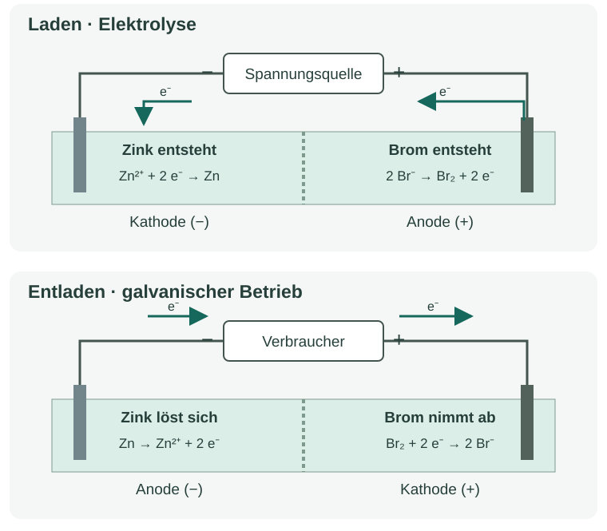

Informieren
Erklärung und Beispiel öffnen
Eine galvanische Zelle nutzt eine freiwillig ablaufende Redoxreaktion zur Abgabe elektrischer Energie. Eine Elektrolyse benötigt eine äußere Spannungsquelle, die eine sonst nicht freiwillige Reaktionsrichtung erzwingt. Bei einem geeigneten wiederaufladbaren System werden beim Laden die Stoffe zurückgebildet, die beim Entladen reagieren.
Ein Zinkbromid-Modell in zwei Betriebsarten
Links liegt die Zinkseite, rechts die Bromseite. Beim Laden wird aus gelösten Zinkionen metallisches Zink; aus Bromidionen entsteht Brom. Das Modell zeigt einen wachsenden grauen Belag links und eine zunehmende gelbbraune Färbung rechts. Beim Entladen unter Belastung nehmen Belag und Färbung wieder ab. Die Farbe ist eine Beobachtung; die Zuordnung zu Brom ist bereits die stoffliche Deutung.

Beispiel: vom Stoff zur Gleichung
Ein Zn²⁺-Ion muss zwei Elektronen aufnehmen, damit ein neutrales Zinkatom entsteht. Die Teilgleichung beim Laden lautet deshalb Zn²⁺ + 2 e⁻ → Zn. Zugleich geben zwei Bromidionen insgesamt zwei Elektronen ab: 2 Br⁻ → Br₂ + 2 e⁻. Beim Addieren kürzen sich die Elektronen:
Laden: Zn²⁺ + 2 Br⁻ → Zn + Br₂
Die Stoffänderungen beim Entladen werden mit den umgekehrten Teilgleichungen beschrieben:
Zn → Zn²⁺ + 2 e⁻
Br₂ + 2 e⁻ → 2 Br⁻
Entladen: Zn + Br₂ → Zn²⁺ + 2 Br⁻
Eine Spannung im Leerlauf zeigt eine Potentialdifferenz. Erst bei geschlossenem Stromkreis und tatsächlich fließendem Strom kann elektrische Energie an einen Verbraucher abgegeben werden. Die Umkehrbarkeit der Hauptreaktion garantiert keine verlustfreie oder unbegrenzt oft mögliche Wiederaufladung.
Modellgrenze: Dargestellt sind die vorgegebenen Hauptreaktionen. Brom wird vereinfacht als Br₂ beschrieben; Polybromide, Nebenreaktionen und technische Batteriekonstruktionen bleiben unberücksichtigt. Das ist ein Medienmodell, keine Anleitung zur Durchführung eines Bromversuchs.
A · Beobachtung und Reaktion verbinden
Die folgenden Beschreibungen gehören zu einer konstruierten Bildfolge desselben Modells:
- „Der graue Belag links wächst; rechts wird die Lösung stärker gelbbraun.“ Ordne die Betriebsart zu und trenne Beobachtung und Deutung in zwei Sätzen.
- „Ein angeschlossener Verbraucher wird betrieben; der Belag links wird kleiner.“ Ordne die Betriebsart zu. Formuliere die beiden Teilgleichungen und die Gesamtgleichung.
- Erkläre, warum „Eine Spannung ist messbar“ allein noch keine laufende Entladung nachweist.
Hilfe 1
Frage zuerst: Werden Zink und Brom aufgebaut oder verbraucht? Die Beobachtung nennt sichtbare Veränderungen; die Deutung nennt Teilchen und Reaktionen.
Hilfe 2
Beim Entladen wird Zink zu Zn²⁺ oxidiert. Schreibe die zwei abgegebenen Elektronen auf die Produktseite und verwende dieselbe Elektronenzahl für die Bromreaktion.
Musterlösung
- Laden/Elektrolyse. Beobachtung: Der graue Belag wächst und die gelbbraune Färbung wird intensiver. Deutung: Zn²⁺ wird zu Zn reduziert; Br⁻ wird zu Br₂ oxidiert.
- Entladen/galvanischer Betrieb. Zn → Zn²⁺ + 2 e⁻; Br₂ + 2 e⁻ → 2 Br⁻. Gesamt: Zn + Br₂ → Zn²⁺ + 2 Br⁻. Zink liefert die Elektronen, die an der Bromseite aufgenommen werden.
- Im Leerlauf kann eine Potentialdifferenz bestehen, obwohl praktisch kein Strom fließt. Eine laufende Entladung erfordert einen geschlossenen Stromkreis; Strommessung oder nachgewiesener Betrieb des Verbrauchers liefert den zusätzlichen Befund.
B · Umkehrung begründen
- Formuliere die Ladegleichung erneut aus den beiden Teilgleichungen. Kontrolliere getrennt die Zahl der Zn- und Br-Atome sowie die Gesamtladung.
- In einem idealisierten Ladevorgang entstehen 0,50 mmol Zn. Bestimme ohne Faraday-Rechnung die gleichzeitig entstehende Stoffmenge Br₂ sowie die verbrauchten Stoffmengen Zn²⁺ und Br⁻. Erkläre den Zusammenhang.
- Beurteile: „Wenn sich eine Gesamtgleichung umkehren lässt, lässt sich jede Batterie in der Praxis beliebig oft aufladen.“
Hilfe 1
Die Koeffizienten der Gesamtgleichung geben Stoffmengenverhältnisse an. Unterscheide das Molekül Br₂ von zwei Bromidionen.
Hilfe 2
Zn²⁺ + 2 Br⁻ → Zn + Br₂: links beträgt die Gesamtladung +2 − 2 = 0. Für 1 mol Zn wird 1 mol Br₂ gebildet. Die praktische Zelle ist mehr als ihre Reaktionsgleichung.
Musterlösung
- Laden: Zn²⁺ + 2 e⁻ → Zn und 2 Br⁻ → Br₂ + 2 e⁻. Addiert: Zn²⁺ + 2 Br⁻ → Zn + Br₂. Auf beiden Seiten: ein Zn-Atom und zwei Br-Atome; Gesamtladung jeweils 0.
- Es entstehen 0,50 mmol Br₂. Verbraucht werden 0,50 mmol Zn²⁺ und 1,00 mmol Br⁻. Beide Teilreaktionen setzen 1,00 mmol Elektronen um. Die Koeffizienten sichern damit Stoff- und Elektronenbilanz.
- Die Behauptung ist falsch. Eine umkehrbare formale Gleichung allein belegt keine technisch wiederaufladbare Zelle. Nebenreaktionen, Stoffverluste und Veränderungen der Elektroden können das Rückbilden der Ausgangszustände verhindern; auch geeignete Akkus altern.
Zurück zur Checkliste
Kannst du den Punkt jetzt an einer eigenen Erklärung oder einer neuen Aufgabe nachweisen? Ordne dich ein: sicher (selbstständig), teils (mit Hilfe) oder offen (noch Lernbedarf). Notiere bei Bedarf, was du noch klären möchtest.
Fachliche Quellen und Modellgrenzen
Fachlicher Abgleich: 09.10.2026. Texte, Aufgaben, Zahlenbeispiele und Grafiken sind eigenständig erstelltes Unterrichtsmaterial. Alle Rechendaten sind konstruiert, sofern nicht ausdrücklich als Referenzkonstanten bezeichnet.
- OpenStax · Chemistry 2e, 17.7 – Elektrolyse und quantitative Elektrodenreaktionen.
- LEIFIchemie · Zinkbromid – Fachlicher Vergleich der Stoffänderungen; die vorliegende Seite enthält nur ein Medienmodell.
Modellgrenze: Dargestellt sind die vorgegebenen Hauptreaktionen. Brom wird vereinfacht als Br₂ beschrieben; Polybromide, Nebenreaktionen und technische Batteriekonstruktionen bleiben unberücksichtigt. Das ist ein Medienmodell, keine Anleitung zur Durchführung eines Bromversuchs.